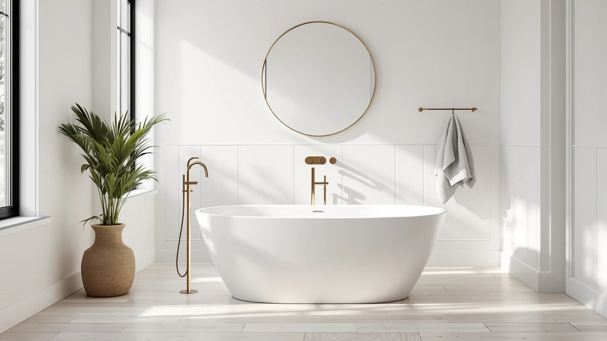

Best Freestanding Tub Faucets (2026): Floor-Mount Fillers for Your Soaking Tub
Prices and picks verified as of September 2026. Independent, reader-supported reviews.


Things to Know Before You Buy
- Rough-in distance, the gap between the floor valve and the tub's spout reach point, causes more returns than any other spec on a freestanding tub faucet.
- The valve has to go into the floor during rough plumbing, before flooring goes down, so you need to pick a faucet before the tub arrives on site.
- Solid brass bodies cost more than zinc alloy but resist corrosion and hold their finish longer, which matters most if you plan to keep the tub for a decade or more.
- Low water pressure, especially on well systems, fills a floor-mount tub slower than a standard wall-mount spout because water travels a longer path through a narrower riser.
- Adding a handheld shower diverter later usually means replacing the entire filler, so decide on that feature before you order.
The best freestanding tub faucet for your bathroom depends less on finish and more on where your water lines already run, since floor-mount fillers need rough-in plumbing set months before the tub ever arrives. A faucet that looks perfect in a listing photo can miss your tub's spout reach by inches if nobody checks the rough-in distance first. This guide walks through the plumbing basics, the style categories, and the mistakes that turn a $600 fixture into a return.
We compared floor-mount and deck-mount options across major plumbing brands, along with rough-in kits, spout reach specs, and verified owner reviews, to figure out which fillers hold up under daily use instead of sitting pretty in a showroom. Reviewers consistently flag two problems: fillers that arrive with a rough-in kit sized for a different tub, and finishes that show water spots faster than the listing suggests.
Below you will find our top three picks, a breakdown of what separates single-handle from widespread floor-mount fillers, and answers to the plumbing questions buyers ask most before they commit to a rough-in location. Start with your tub's spout reach and work outward from there.
What You Need to Know
A freestanding tub faucet works differently than a wall-mount or deck-mount model. Instead of attaching to the tub deck or a nearby wall, it connects to a rough-in valve set into the floor, with a length of exposed pipe running up to the spout body. That valve has to go in during the rough plumbing stage, before drywall and flooring go down, which means you need to pick your faucet and confirm its rough-in kit before the tub itself arrives on site.
Rough-in distance is the measurement that trips up the most buyers. It is the horizontal gap between the valve location and the faucet's final resting spot next to the tub, and it varies by model even among fillers that look nearly identical online. Order the wrong kit and the spout either crowds the tub wall or sits too far out to reach the basin.
Water pressure matters more with floor-mount fillers than with standard tub spouts, since the water travels a longer path through a narrower riser pipe before it reaches the tub. Low-pressure homes, especially those on well systems, fill slower with a floor-mount faucet than with a wall-mount tub filler, so check your home's PSI rating before you commit to a specific model.
Body material affects both price and lifespan. Solid brass bodies cost more upfront but resist corrosion and hold their finish longer than the zinc alloy bodies common in budget fillers under $150. If you plan to keep the tub for a decade or more, the extra cost usually pays for itself in fewer replacements.
Types and Categories
Floor-mount fillers split into two handle configurations. Single-handle models control temperature and flow with one lever and install faster since only one valve body sits below the floor. Widespread or dual-handle fillers separate hot and cold into two handles flanking a center spout, which gives a more traditional look but requires two supply lines instead of one and typically costs more to rough in.
Deck-mount and wall-mount tub fillers are worth ruling out before you shop for a floor-mount option. Deck-mount fillers attach directly to the tub rim or a nearby ledge and skip the floor rough-in entirely, which makes them a simpler retrofit for a tub that is already installed. Wall-mount fillers hang from the wall behind the tub instead of rising from the floor. Neither delivers the freestanding, sculptural look that draws most buyers to a floor-mount faucet in the first place, but both cost less to install in a renovation where the plumbing already exists.
Many floor-mount fillers add a handheld shower diverter, which routes water to a separate handheld sprayer for rinsing or washing the tub. This feature adds one more valve and hose connection but turns a soaking tub into something closer to a hybrid shower-bath setup.
A smaller group of fillers use a thermostatic valve instead of a standard pressure-balance valve. Thermostatic models let you preset a target temperature and hold it steady even if someone runs water elsewhere in the house, at a price premium that usually starts around $400 above a comparable pressure-balance model.
How to Choose
Start by confirming your tub's spout reach, the distance the faucet needs to cover between the floor location and the center of the tub basin where water should land. Manufacturers list this spec on every floor-mount filler, usually as a range like 8 to 14 inches, and a mismatch here is the single most common return reason. Measure your planned faucet position against your tub's actual dimensions before you order anything, not the tub's listed size on the box alone.
Next, match the rough-in kit to your plumbing layout. Most fillers ship with a standard kit sized for a straightforward floor installation, but tubs set on a raised platform or near a wall may need an extended or offset kit instead. If you're unsure, send your plumber the manufacturer's rough-in diagram before the rough plumbing inspection, not after.
Set a budget range and expect brass-bodied fillers to sit meaningfully above zinc alloy ones. Entry-level floor-mount faucets start around $100 to $150 and use zinc alloy bodies with a basic finish. Mid-range options between $250 and $400 typically move to solid brass with a PVD-coated finish. Above $500, you're usually paying for a recognized plumbing brand, a wider style selection, or a thermostatic valve, not a meaningful jump in core durability.
Finish should match or complement your other bathroom hardware rather than standing alone. If chrome, brushed nickel, matte black, or brushed gold hardware is already installed elsewhere in the room, choose a faucet finish that either matches it exactly or plays a clear supporting role.
Finally, decide whether you want a handheld shower diverter before you order. Adding one after installation usually means replacing the entire filler rather than retrofitting a single part, so settle this feature question at the same time you settle on rough-in distance and finish.
Common Mistakes to Avoid
The most expensive mistake is ordering a freestanding tub faucet before confirming the rough-in distance against the actual tub, not the tub's advertised dimensions. Floor plans shift a few inches during installation more often than buyers expect, and a filler that is off by even an inch can miss the basin entirely or crowd the tub wall.
Skipping the water pressure check causes a slower, quieter problem. A filler that tests fine in a showroom can take twice as long to fill a deep soaking tub in a home with low household PSI, and by the time you notice, the return window has usually closed.
Buyers also underestimate how much a floor-mount faucet locks in the rough plumbing layout. Once the valve is set in the floor and the flooring goes down around it, moving the faucet position means tearing out tile or flooring to relocate the supply lines. Confirm the exact position before the rough plumbing inspection, not during tub installation.
Matching finish to photos instead of to the room is another common misstep. Product photography under studio lighting can make brushed gold read closer to polished brass, or matte black read closer to oil-rubbed bronze, than either finish looks in a bathroom with natural light. Order a finish sample or check in person at a showroom when the color needs to match existing fixtures precisely.
Buyers on well systems or older homes with narrow supply lines sometimes skip checking compatibility with low-flow rough-in kits, then discover the filler barely trickles once installed.
Care and Maintenance
A freestanding tub faucet needs less maintenance than most bathroom fixtures, but the exposed floor riser collects dust and hard water residue faster than a wall-mount spout because it sits in the open rather than tucked against a wall. Wipe it down weekly with a soft cloth and mild soap, and skip abrasive pads that can dull a PVD-coated finish.
Hard water deposits build up fastest around the spout opening and the diverter, if your model includes one. A mix of equal parts water and white vinegar loosens mineral buildup without damaging chrome or brushed nickel, but matte black and brushed gold finishes need a gentler approach since vinegar can strip PVD coatings with repeated use. Check the manufacturer's care instructions before applying any acidic cleaner to a colored finish.
Inspect the connection where the exposed pipe meets the floor once or twice a year. Because the entire filler bolts to a single point in the floor, any wobble at that connection usually means the mounting hardware has loosened rather than a problem with the valve itself, and it is an easy fix with a wrench before it turns into a leak.
If the faucet's flow slows over a few years, the cause is often mineral buildup inside the aerator or diverter rather than the valve failing outright. Most floor-mount fillers let you unscrew the aerator for a vinegar soak, which resolves slow flow far more often than a full valve replacement does.
Our Top Picks
These three floor-mount fillers cover the price and style range most buyers shop for a freestanding tub. We compared manufacturer specs, rough-in requirements, and owner reviews we could verify to land on an editor's pick, a value pick, and a premium option, each suited to a different budget and finish.

Editor's Pick
Kingston Brass CCK226K1 Kingston Freestanding
A solid brass single-handle filler with a handheld shower diverter, priced to sit between the budget and premium tiers. Owners report a rough-in kit that installs without modification on standard floor layouts, and the finish options cover chrome, brushed nickel, and matte black.
$599.99
Check Price on Amazon
Best Value
Delta Faucet Floor-Mount Freestanding Tub
A budget-friendly single-handle filler from a recognized plumbing brand, which matters most when you need replacement parts years down the line. It skips the handheld diverter but covers the core rough-in and finish needs most buyers have.
$259.00
Check Price on Amazon
Premium Choice
Delta Faucet Trinsic Floor Mount
A widespread, dual-handle design with a traditional silhouette, priced for buyers who want a recognized brand's premium tier rather than a boutique import. The higher price reflects the dual-valve rough-in and the brand's extended warranty coverage, not a dramatically different core mechanism.
$1,809.99
Check Price on AmazonFrequently Asked Questions
What is rough-in distance on a freestanding tub faucet?
Rough-in distance is the measurement between the floor valve location and the tub's spout reach point, usually specified as a range like 8 to 14 inches on the product listing. Match this spec to your tub's actual dimensions, not its advertised size, before you order a rough-in kit.
Can you install a freestanding tub faucet after the tub is already in place?
It is possible but far more invasive than installing one during rough plumbing, since the valve needs to sit in the floor near the tub and reaching that spot usually means opening the finished floor. Deck-mount or wall-mount fillers are a simpler retrofit option for a tub that is already installed.
How much does a floor-mount tub faucet cost to install?
The fixture itself runs from about $100 for a basic zinc alloy model to $1,800 or more for a premium widespread design, and labor typically adds $300 to $800 depending on whether the rough-in valve is part of a larger renovation or a standalone install.
Do all freestanding tub faucets include a handheld shower diverter?
No, it is an optional feature that adds a valve and hose connection rather than a standard part of every filler. Decide whether you want one before you order, since retrofitting a diverter later usually means replacing the entire fixture.
What finish holds up best on a freestanding tub faucet?
Brass-bodied fixtures with a PVD coating outlast zinc alloy bodies regardless of the color finish you choose, and chrome remains the easiest finish to keep looking clean since water spots wipe off without special cleaners. Matte black and brushed gold hide water spots better day to day but show scratches more clearly over time.
Verdict
Choosing the best freestanding tub faucet comes down to two numbers most buyers skip past: your tub's spout reach and your home's water pressure. Get those right and the rest, finish, handle style, and diverter, becomes a matter of taste and budget rather than a plumbing gamble. For most buyers, a solid brass single-handle filler in the $250 to $600 range covers the durability and finish options that matter without paying for features a soaking tub does not need.
Our editor's pick, the Kingston Brass CCK226K1, lands in that range with a handheld diverter and a rough-in kit that fits standard floor layouts without modification. Buyers on a tighter budget do equally well with the Delta floor-mount option, which trades the diverter for a lower price from a plumbing brand with wide parts availability. Whichever filler you choose, confirm the rough-in distance against your actual tub before the rough plumbing inspection, since that single measurement causes more returns than any finish or feature does.